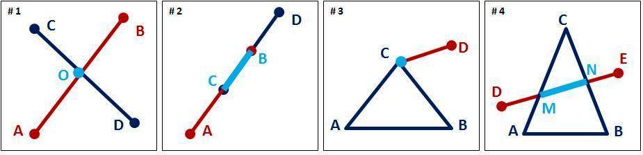
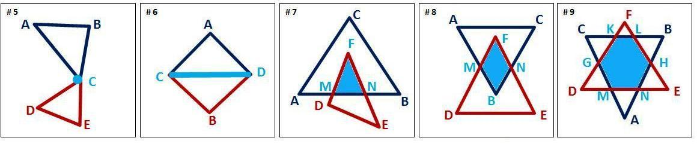
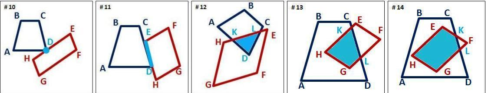
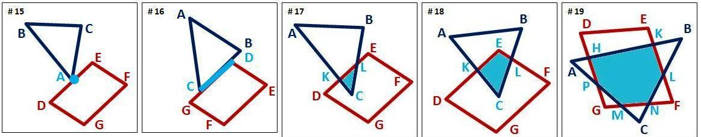

В задаче 3 при пересечении треугольников и четырехугольников у нас иногда
получались "другие фигуры". Как можно охарактеризовать эти фигуры в общем:
что это за фигуры?
- точка (#1: точка О является пересечением отрезков
[AB] и [CD]);
- отрезок (#2: отрезок [BC] является пересечением
отрезков [AB] и [CD]).
Остальные фигуры: невозможно.
б. При условии, что отрезки лежат на одной прямой. Это условие не
достаточное, но необходимое.

Задача 2
Возможное пересечение отрезка и треугольника:
- точка (#3: точка С является пересечением треугольника
ABC и отрезка [CD]);
- отрезок (#4: отрезок [MN] является пересечением
треугольника ABC и отрезка [DE]).
Остальные фигуры: невозможно.
Задача 3
a. Возможное пересечение двух треугольников:
- точка (#5: точка С является пересечением
треугольников ABC и CDE);
- отрезок (#6: отрезок [CD] является пересечением
треугольников ACD и BCD);
- треугольник> (#7: треугольник MFN является
пересечением треугольников ABC и DEF);
- четырехугольник (#8: четырехугольник BMFN является
пересечением треугольников ABC и DEF);
- другая фигура (#9: в данном случае это шестиугольник
GKLHNM, который является пересечением треугольников ABC и DEF).

б. Возможное пересечение двух четырехугольников:
- точка (#10: точка D является пересечением
четырехугольников ABCD и EFGH);
- отрезок (#11: отрезок [ED] является пересечением
четырехугольников ABCD и EFGH);
- треугольник (#12: треугольник DKL является
пересечением четырехугольников ABCD и EFGH);
- четырехугольник (#13: четырехугольник GHKL является
пересечением четырехугольников ABCD и EFGH);
- другая фигура (#14: в данном случае это пятиугольник
EKLGH, который является пересечением четырехугольников ABCD и EFGH).

в. Возможное пересечение треугольника и четырехугольника:
- точка (#15: точка A является пересечением
треугольника ABC и четырехугольника DEFG);
- отрезок (#16: отрезок [CD] является пересечением
треугольника ABC и четырехугольника DEFG);
- треугольник (#17: треугольник CKL является
пересечением треугольника ABC и четырехугольника DEFG);
- четырехугольник (#18: четырехугольник CKEL является
пересечением треугольника ABC и четырехугольника DEFG);
- другая фигура (#19: в данном случае это шестиугольник
HKLNMP, который является пересечением треугольника ABC и
четырехугольника EFGH).

Задача 4
Ответ самого простого уровня:
- это многоугольники.
Сложнее:
- это выпуклые многоугольники (можно заглянуть в
учебник геометрии, чтобы вспомнить, что это такое).
Совсем сложный уровень:
- это выпуклые многоугольники, количество углов в
которых ограничено суммой углов пересекающихся фигур :). Если есть
желание, можете проанализировать это утверждение самостоятельно.